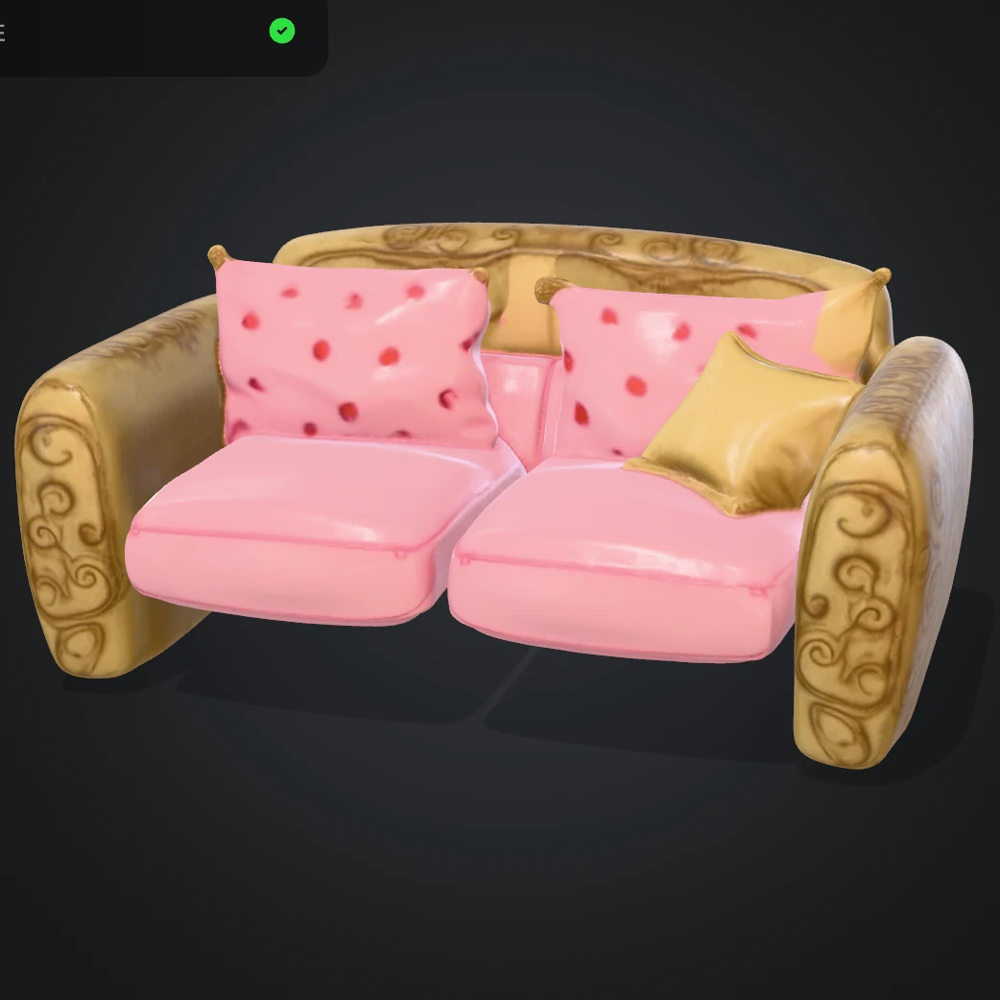
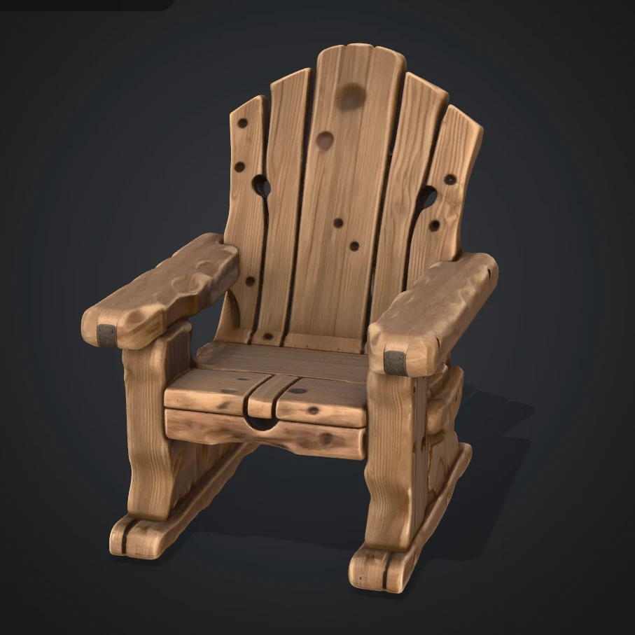
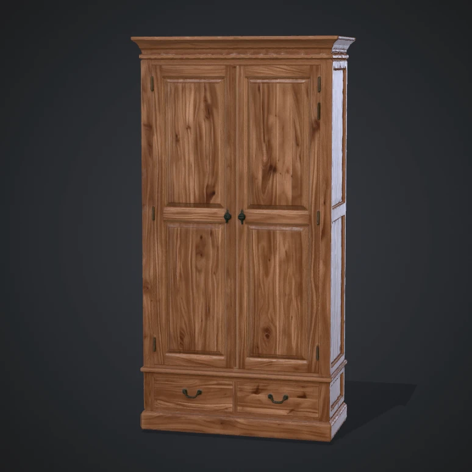

I furnished a Gaussian Splatting room, in the browser
I rendered a scanned living room as Gaussian splats and built an editor around it. Users can drag furniture from a catalog, snap it to the floor, then move, rotate and scale it with Unity-style gizmos. This is the story of how I got there, step by step.
Full living room photorealistic reconstruction loaded via single SOG container.
Adaptive pixel ratio and tighter Gaussian falloff slashing overdraw on phone hardware.
Runtime camera enclosure preventing movement out of the scanned room geometry.
Why I Started: My Viewer Wasn't a World
I already had a 3D portrait viewer on my portfolio, built with React Three Fiber, custom 3D typography, spring physics, and interactive models. It could showcase an object.
What it could not do was hand someone a world and let them change it. That is the next hard problem in spatial computing: a 3D editing canvas inside whole generated worlds, with camera behaviour, selection, and manipulation patterns nobody has standardized yet. So I gave myself a brief: close exactly that gap, in the open, one thin slice at a time.
- I read before I built: I installed @sparkjsdev/spark, a Three.js-based Gaussian Splatting renderer, and mirrored all 25 official documentation pages locally. I wanted the renderer's own vocabulary in my head before I wrote a line of scene code.
- I picked one real asset: a vintage living room scan (a single-file .sog, 1.57M splats) and three furniture models with thumbnails.
- I chose a use case with a real user: home design. Years earlier I had watched salon customers struggle to picture a haircut from 2D catalog photos, and I built and maintained an in-house 360 hairstyle viewer application. This felt like the same consultation loop, rebuilt for the browser: walk through a scanned room, stage furniture in it, decide with confidence.
- I built in slices I could test on my phone: viewer first, then the navigation boundary, then performance, then drag-and-drop, then gizmo editing. Every slice had to run on device before I moved on.
Step 1: My First Room, Floating in Black
I followed Spark's quick-start recipe the way the docs wrote it: one SparkRenderer added to my scene, one SplatMesh pointed at the .sog URL, which the loader auto-detected from the zip contents without requiring a file-type hint, and Spark's own SparkControls for WASD and touch movement.
I did not trust everything I read, though. The docs' coordinate re-orientation quaternion looked like magic, so I pulled up Spark's official SOG example on GitHub and confirmed the same convention there before keeping it. That habit of verifying against upstream source instead of assuming snippets saved me more than once on this project.
Then I made a decision about feeling, not technology. I put the viewer on its own fullscreen page with zero site chrome, no header, and no footer. Just a loading veil with byte progress, an error card with a retry button, and one small exit button. I believe spatial presence dies the moment site chrome intrudes, and I wanted stepping into this room to feel like arriving somewhere.
Step 2: I Kept Flying Through Walls, So I Built a Fence
The moment I could move, I did what every user does: I flew straight through a wall into black nothing. It felt broken, because it was. A scanned room you can fall out of is not a world, it is a diorama with no glass.
I refused to hardcode room dimensions because I wanted the fence to fit any scan I load next. At runtime I read the loaded splat extents through SplatMesh.getBoundingBox(), the same API Spark's editor example uses, transformed them into world space, and clamped the camera every frame after controls update.
I opened the floor plan to an 8 by 8 meter roam area while keeping the floor and ceiling fenced, starting every visit inside the room at standing eye height.
Because my clamp runs after the controls and owns the final say, it catches everything uniformly: WASD, mouse drag, scroll wheel, touch inertia. I tested each one by trying to escape. I couldn't.
Step 3: My Phone Told Me the Truth About Performance
On my desktop the room sang. On my phone it groaned. So I counted first: 1.57M splats, sitting right at the Android budget ceiling of 1 to 2 million splats in Spark's own performance guide. The numbers proved that optimization was the difference between a showcase and a slideshow.
- I cut pixels before polygons: mobile renders at 1x pixel ratio, desktop up to 2x. On a 3x-DPR phone that erases roughly 9x of fill cost in one line.
- I tightened the Gaussian falloff from sqrt(8) to sqrt(5), which the documentation calls perceptually near-identical, and my inspection confirmed that transparent overdraw dropped significantly.
- I switched on Level-of-Detail: a background worker builds a downsampled tree and auto-fits each platform's splat budget.
- I stopped asserting and started measuring: a ?fps=1 flag reveals a corner meter, so every claim above is a number I read on my device, not a hope I shipped.
Step 4: Stocking the Shelves, Then Throwing Things on the Floor
With the room solid, I turned to the reason it exists: furniture. I built a single-column catalog rail docked to the right edge, rendered from a manifest array. Adding a fourth piece means adding one row rather than redesigning a page. Making the catalog data-driven from day one eliminated hardcoded layout risks.
The models fought me quietly. Their GLB files carry no unit metadata, so I normalize each one at load to a real-world height: the divan becomes 0.8 m, the armchair 0.95 m, and the wardrobe 2.0 m. I convert every material to unlit shading because my scene has no dynamic lights, ensuring wood grain and fabric prints display exactly as authored.



For the drag itself I skipped HTML5 drag-and-drop entirely because it was never designed for 3D spatial scenes, writing pointer-based dragging that unifies mouse and touch. While dragging, a footprint circle tracks my pointer across the floor, auto-sized to each piece's extent, positioned by raycasting onto the floor plane and clamped inside the room bounds.
When released over the canvas, the real mesh commits where the circle stood. When released over the panel, nothing happens. All feedback remains directly inside the scene rather than under the cursor.
Step 5: Teaching It Unity's Vocabulary
Dropping furniture was not enough, I wanted to arrange it smoothly. So I gave the editor the interaction language standard across 3D tools: click a piece and a white ring marks it as selected with a gizmo attached. Move, Rotate, Scale switch from a bottom pill or the W, E, and R keys standard in Unity.
Translate hides its vertical handle so pieces stay grounded on the floor. Scale clamps to 0.3 to 3x so nothing vanishes or swallows the room, and every edit re-clamps into the boundary.
The genuinely tricky part was arbitration. Spark's camera controls and the transform gizmo both listen to the same canvas. The first time I dragged a rotation ring, the whole room swung with it, which felt completely disorienting.
I fixed it by gating camera updates while a gizmo drag owns the pointer, and by teaching click-selection to ignore presses that start on a gizmo handle. Two small rules stopped the two control systems from conflicting.
Step 6: The Floor Was Lying to Me
Then came my favorite bug. My furniture kept sinking below the visible floor because the floor boundary sat visibly underneath the actual floor surface. I had assumed the bounding-box bottom was the floor, but the lowest splat centers live well below the visible surface in outlier territory.
I decoded the .sog position textures offline and plotted a histogram of all 1.57 million heights. The true floor announced itself as a ridge of half a million splats, about 0.6 m above where I had initially placed it.
When my runtime auto-scan of the same data misfired on device under Level-of-Detail, I removed the fragile runtime scan. In its place: the measured default, plus live bracket shortcut keys using [ and ] that nudge the floor in 2 cm steps with the value printed to console. One honest number, confirmed by my own eyes, beats an elegant estimate that is wrong.
Scanned geometry lies about its own surfaces. Any editor that furnishes gaussian scenes needs an explicit floor calibration mechanism measured directly from data, confirmed on device, and tunable per asset. I will not ship a scanned-space editor without one again.
Where I Go Next
This serves as the foundation for editable scanned worlds. Delete and duplicate slot straight into my selection model, while multi-room scans will benefit from per-room volumes instead of one box.
In the future I will raycast the splat volume itself for true surface placement instead of my floor-plane approximation. But the loop already works end to end: stepping into a captured room and staging furniture inside it with immediate tactile feedback. That feeling when I first spun a wardrobe to face the room and pushed it against a wall that stopped it cold is why I build in thin, verifiable slices.